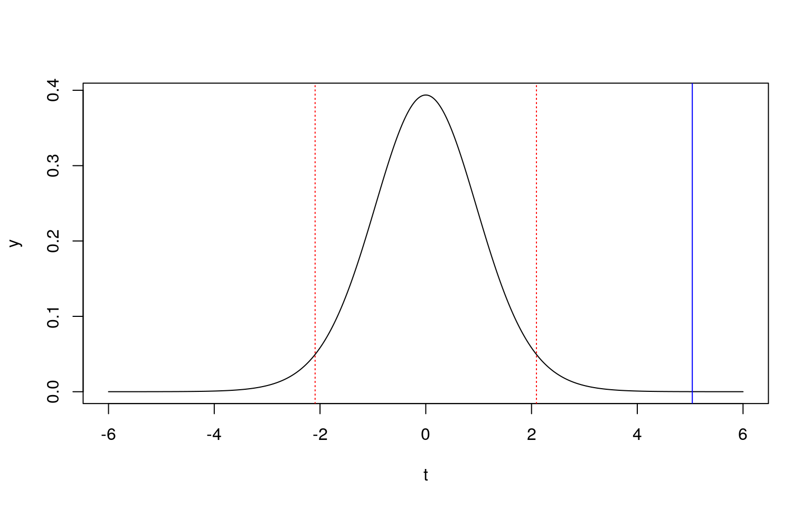
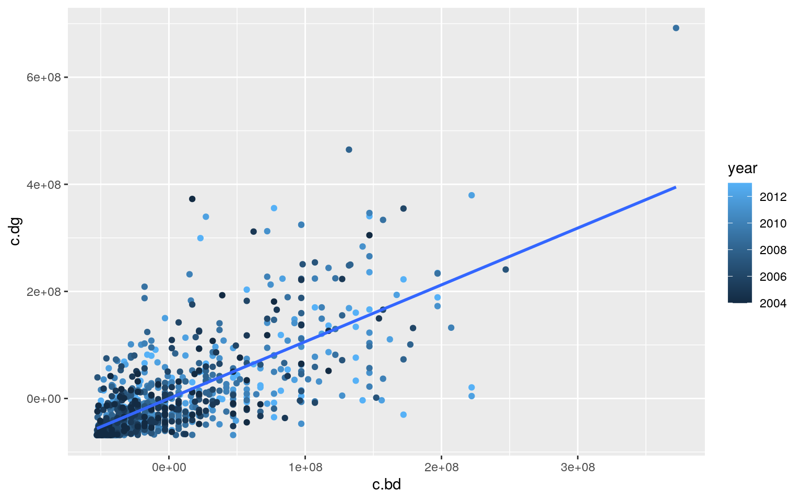
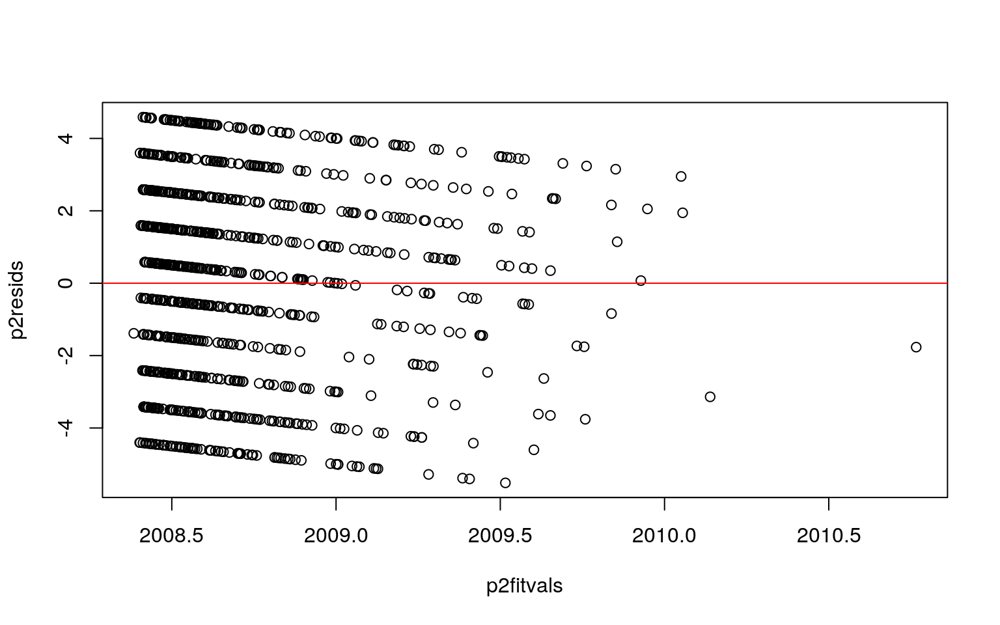
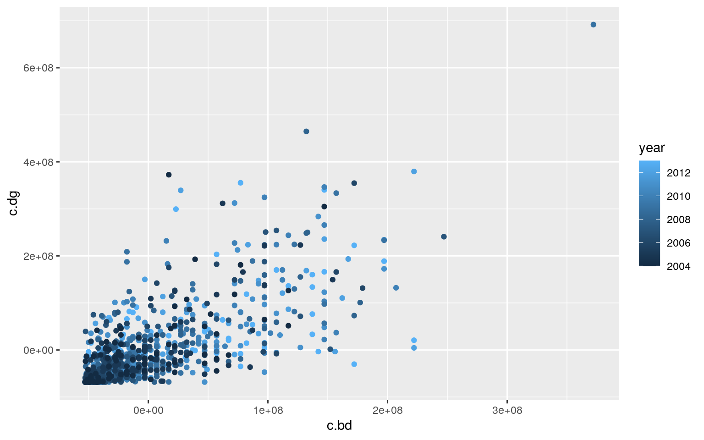
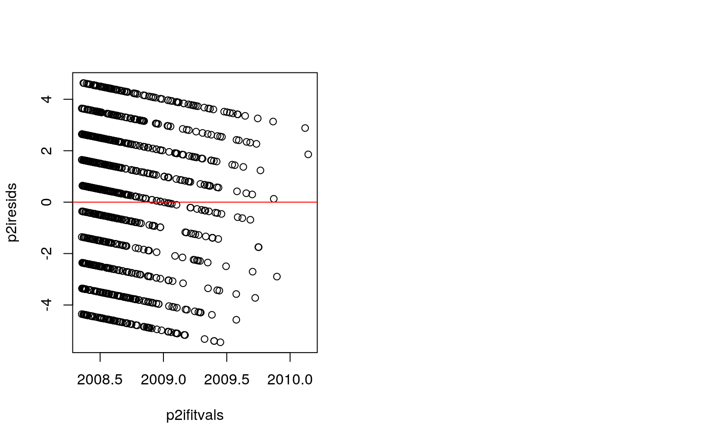
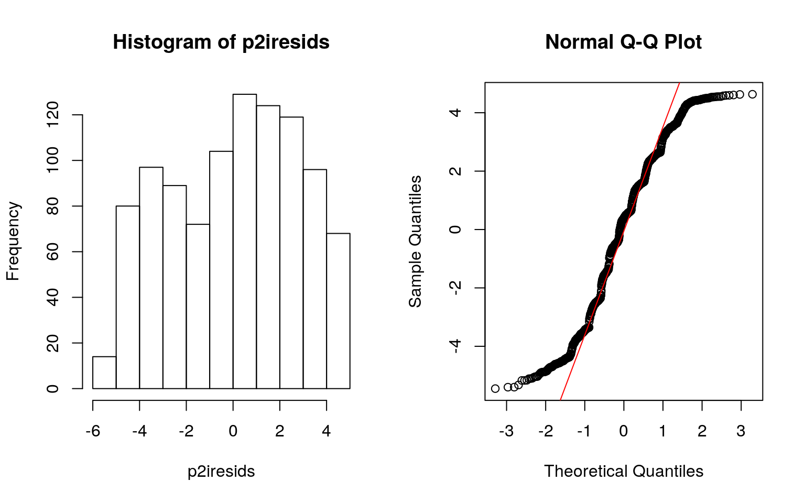
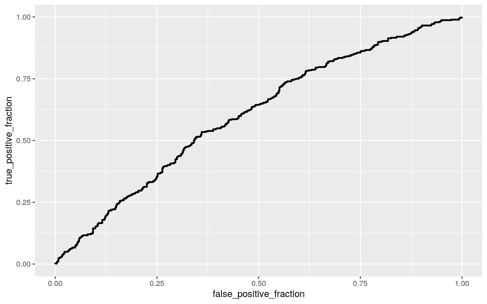
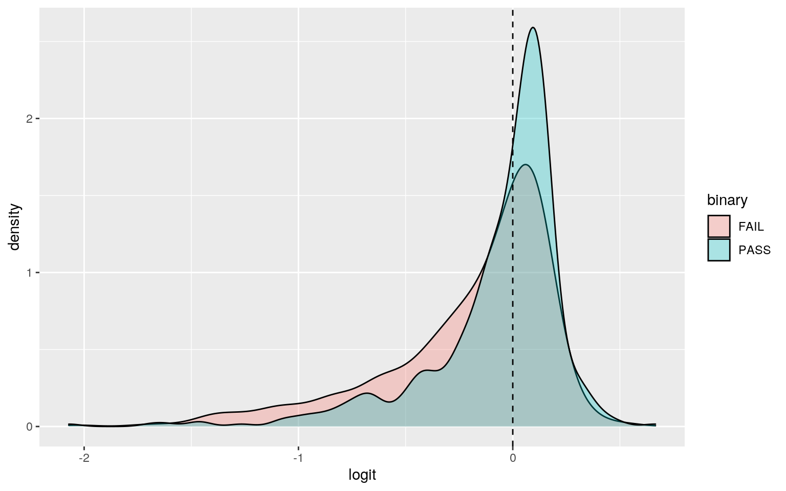

A knitted R Markdown document (preferably HTML) and the raw R Markdown file (as .Rmd) should both be submitted to Canvas by 11:59pm on the due date. These two documents will be graded jointly, so they must be consistent (i.e., don’t change the R Markdown file without also updating the knitted document). Knit an html copy too, for later! In the .Rmd file for Project 2, you can copy the first code-chunk into your project .Rmd file to get better formatting. Notice that you can adjust the opts_chunk$set(...) above to set certain parameters if necessary to make the knitting cleaner (you can globally set the size of all plots, etc). You can copy the set-up chunk in Project2.Rmd: I have gone ahead and set a few for you (such as disabling warnings and package-loading messges when knitting)!
Like before, I envision your written text forming something of a narrative structure around your code/output. All results presented must have corresponding code. Any answers/results/plots etc. given without the corresponding R code that generated the result will not be graded. Furthermore, all code contained in our project document should work properly. Please do not include any extraneous code or code which produces error messages. (Code which produces warnings is fine as long as you understand what the warnings mean.)
Find one dataset with at least 5 variables (ideally more!) that you want to use to build models/test hypotheses. At least one should be categorical (with 2-5 groups, ideally; definitely fewer than 10) and at least two should be numeric (taking on more than 10 distinct values). Ideally, at least of your variables will be binary (if not, you will have to create one by discretizing a numeric or collapsing levels of a categorical). You will need a minimum of 40 observations (at least 10 observations for every explanatory variable you have, ideally 20+ observations/variable).
It is perfectly fine to use either dataset (or the merged dataset, or a subset of your variables) from Project 1. However, I might encourage you to diversify things a bit and choose a different dataset to work with (particularly if the variables did not reveal interesting associations in Project 1 that you want to follow up with). The only requirement/restriction is that you may not use data from any examples we have done in class or lab. It would be a good idea to pick more cohesive data this time around (i.e., variables that you actually thing might have a relationship you would want to test). Think more along the lines of your Biostats project.
Again, you can use data from anywhere you want (see bottom for resources)! If you want a quick way to see whether a built-in (R) dataset has binary and/or character (i.e., categorical) variables, check out this list: https://vincentarelbundock.github.io/Rdatasets/datasets.html.
library(fivethirtyeight)
bechdel## # A tibble: 1,794 x 15
## year imdb title test clean_test binary budget domgross
intgross code budget_2013
## <int> <chr> <chr> <chr> <ord> <chr> <int> <dbl> <dbl>
<chr> <int>
## 1 2013 tt17… 21 &… nota… notalk FAIL 1.30e7 25682380
4.22e7 2013… 13000000
## 2 2012 tt13… Dred… ok-d… ok PASS 4.50e7 13414714 4.09e7
2012… 45658735
## 3 2013 tt20… 12 Y… nota… notalk FAIL 2.00e7 53107035
1.59e8 2013… 20000000
## 4 2013 tt12… 2 Gu… nota… notalk FAIL 6.10e7 75612460
1.32e8 2013… 61000000
## 5 2013 tt04… 42 men men FAIL 4.00e7 95020213 9.50e7
2013… 40000000
## 6 2013 tt13… 47 R… men men FAIL 2.25e8 38362475 1.46e8
2013… 225000000
## 7 2013 tt16… A Go… nota… notalk FAIL 9.20e7 67349198
3.04e8 2013… 92000000
## 8 2013 tt21… Abou… ok-d… ok PASS 1.20e7 15323921 8.73e7
2013… 12000000
## 9 2013 tt18… Admi… ok ok PASS 1.30e7 18007317 1.80e7
2013… 13000000
## 10 2013 tt18… Afte… nota… notalk FAIL 1.30e8 60522097
2.44e8 2013… 130000000
## # … with 1,784 more rows, and 4 more variables:
domgross_2013 <dbl>, intgross_2013 <dbl>,
## # period_code <int>, decade_code <int>bdel<-bechdel%>%filter(year %in% c("2004","2005","2006","2007","2008","2009","2010","2011","2012","2013"))%>%select(-imdb,-test,-period_code,-decade_code)%>% mutate(pass=ifelse(binary=="PASS",1,0))%>%na.omit
bdel## # A tibble: 992 x 12
## year title clean_test binary budget domgross intgross
code budget_2013 domgross_2013
## <int> <chr> <ord> <chr> <int> <dbl> <dbl> <chr> <int>
<dbl>
## 1 2013 21 &… notalk FAIL 1.30e7 25682380 4.22e7 2013…
13000000 25682380
## 2 2012 Dred… ok PASS 4.50e7 13414714 4.09e7 2012…
45658735 13611086
## 3 2013 12 Y… notalk FAIL 2.00e7 53107035 1.59e8 2013…
20000000 53107035
## 4 2013 2 Gu… notalk FAIL 6.10e7 75612460 1.32e8 2013…
61000000 75612460
## 5 2013 42 men FAIL 4.00e7 95020213 9.50e7 2013… 40000000
95020213
## 6 2013 47 R… men FAIL 2.25e8 38362475 1.46e8 2013…
225000000 38362475
## 7 2013 A Go… notalk FAIL 9.20e7 67349198 3.04e8 2013…
92000000 67349198
## 8 2013 Abou… ok PASS 1.20e7 15323921 8.73e7 2013…
12000000 15323921
## 9 2013 Admi… ok PASS 1.30e7 18007317 1.80e7 2013…
13000000 18007317
## 10 2013 Afte… notalk FAIL 1.30e8 60522097 2.44e8 2013…
130000000 60522097
## # … with 982 more rows, and 2 more variables:
intgross_2013 <dbl>, pass <dbl>My dataset is the bechdel test for movies from 2004-2013 and the main variables are the if it passed, budget, domestic gross sales when it came out,and the year it came out.the domestic gross sales and budget in the year 2013 are also variables but they will not be used in this assessment. There are a total of 992 observations after removing NAs.
#manova
summary(manova(cbind(domgross,budget)~clean_test,data=bdel))## Df Pillai approx F num Df den Df Pr(>F)
## clean_test 4 0.035375 4.443 8 1974 2.376e-05 ***
## Residuals 987
## ---
## Signif. codes: 0 '***' 0.001 '**' 0.01 '*' 0.05 '.' 0.1
' ' 1#uni anovas for sig
summary(aov(domgross~clean_test,data=bdel)) ## Df Sum Sq Mean Sq F value Pr(>F)
## clean_test 4 4.187e+16 1.047e+16 1.523 0.193
## Residuals 987 6.784e+18 6.873e+15summary(aov(budget~clean_test,data=bdel)) ## Df Sum Sq Mean Sq F value Pr(>F)
## clean_test 4 8.613e+16 2.153e+16 6.93 1.68e-05 ***
## Residuals 987 3.067e+18 3.107e+15
## ---
## Signif. codes: 0 '***' 0.001 '**' 0.01 '*' 0.05 '.' 0.1
' ' 1#post hoc t
pairwise.t.test(bdel$budget,bdel$clean_test, p.adj="none")##
## Pairwise comparisons using t tests with pooled SD
##
## data: bdel$budget and bdel$clean_test
##
## nowomen notalk men dubious
## notalk 0.287 - - -
## men 0.850 0.135 - -
## dubious 0.870 0.352 0.704 -
## ok 0.056 4.8e-07 0.046 0.022
##
## P value adjustment method: none# number of tests done
4## [1] 4# cal prob of type I error
(1-.95^4) ## [1] 0.1854938#if unadjusted an use bon correction
(.05/4)## [1] 0.0125# manova assumptions
library(rstatix)
group <- bdel$clean_test
DVs <- bdel %>% select(domgross,budget)
#Test multivariate normality for each group (null: assumption met)
sapply(split(DVs,group), mshapiro_test)## nowomen notalk men dubious ok
## statistic 0.843842 0.9014812 0.642057 0.7486026
0.8670872
## p.value 4.301694e-07 2.942139e-12 1.242948e-14
1.106484e-10 1.890869e-19In the MANOVA for domostic gross profit and budget there was a difference in mean across the test result. After running ANOVAs for each variable there was a significant difference for budget across the bechdal test results. Using a post hoc t test there was signicant difference on the budget for test results between passing and when women do not speak, talk about men, and those that do not quite pass the test. With 4 tests the predicted Type I error rate is 0.185 and when the corrected p-value is .0125 the only significant difference seems to be between movies with passing scores and movies where women do not speak. The assumption of multivariate normality was violated in this dataset. It is not random since it is the top grossing films in America and since it fails normality the covarineces are not equal.
#randomization test that makes sense
thettest<-t.test(data=bdel,budget~pass)
thettest##
## Welch Two Sample t-test
##
## data: budget by pass
## t = 5.0405, df = 984.72, p-value = 5.523e-07
## alternative hypothesis: true difference in means is not
equal to 0
## 95 percent confidence interval:
## 10777582 24519367
## sample estimates:
## mean in group 0 mean in group 1
## 61127854 43479380#plot null dist and test stat
N=20
samp<-rnorm(N)
nullttest<-t.test(samp)
tcrit<-qt(0.025, df=(N-1))
dummm<-seq(-6, 6, length=10^4)#For the plot
plot(dummm, dt(dummm, df=(N-1)), type='l', xlab='t', ylab='y')+ abline(v=thettest$statistic, col='blue' )+ abline(v=tcrit, col='red',lty=3)+ abline(v=-tcrit, col='red',lty=3)
## integer(0)The null hypothesis is that there is no diffence in the mean budget of movies that pass compared to movies that fail, the alternative is that there will be a diffence between passing and failing movies. From the data there is a significant differnce between the mean budgets where groups that fail the bechdal test have a higher budget than those that pass.
3. (35 pts) Build a linear regression model predicting one of your response variables from at least 2 other variables, including their interaction. Mean-center any numeric variables involved in the interaction.
ggplot() using geom_smooth(method="lm"). If your interaction is numeric by numeric, refer to code in the slides to make the plot or check out the interactions package, which makes this easier. If you have 3 or more predictors, just chose two of them to plot for convenience. (8)coeftest(..., vcov=vcovHC(...)). Discuss significance of results, including any changes from before/after robust SEs if applicable. (8)library(lmtest)
library(sandwich)
#linear regression to predict rsp with two other variables
p2lr<-lm(year ~budget + domgross , data=bdel)
summary(p2lr)##
## Call:
## lm(formula = year ~ budget + domgross, data = bdel)
##
## Residuals:
## Min 1Q Median 3Q Max
## -5.5156 -2.4832 0.4096 2.3649 4.5878
##
## Coefficients:
## Estimate Std. Error t value Pr(>|t|)
## (Intercept) 2.008e+03 1.219e-01 16476.046 < 2e-16 ***
## budget 6.050e-09 2.248e-09 2.691 0.00725 **
## domgross -2.858e-10 1.528e-09 -0.187 0.85166
## ---
## Signif. codes: 0 '***' 0.001 '**' 0.01 '*' 0.05 '.' 0.1
' ' 1
##
## Residual standard error: 2.766 on 989 degrees of freedom
## Multiple R-squared: 0.01361, Adjusted R-squared: 0.01161
## F-statistic: 6.821 on 2 and 989 DF, p-value: 0.001142bdel<-bdel%>% mutate(c.dg=domgross-mean(domgross), c.bd=budget-mean(budget))
p2lri<-lm(year ~c.bd *c.dg , data=bdel)
summary(p2lri)##
## Call:
## lm(formula = year ~ c.bd * c.dg, data = bdel)
##
## Residuals:
## Min 1Q Median 3Q Max
## -5.4497 -2.4534 0.3899 2.3556 4.6325
##
## Coefficients:
## Estimate Std. Error t value Pr(>|t|)
## (Intercept) 2.009e+03 9.488e-02 21170.301 < 2e-16 ***
## c.bd 6.346e-09 2.282e-09 2.781 0.00552 **
## c.dg 2.988e-10 1.709e-09 0.175 0.86122
## c.bd:c.dg -8.142e-18 1.064e-17 -0.765 0.44431
## ---
## Signif. codes: 0 '***' 0.001 '**' 0.01 '*' 0.05 '.' 0.1
' ' 1
##
## Residual standard error: 2.767 on 988 degrees of freedom
## Multiple R-squared: 0.01419, Adjusted R-squared: 0.0112
## F-statistic: 4.741 on 3 and 988 DF, p-value: 0.002736#plot
bdel%>% ggplot(aes(y=c.dg,x=c.bd, color=year)) + geom_point() + geom_smooth(method = "lm",se=F)
#ass w/out int
p2resids<-p2lr$residuals
p2fitvals<-p2lr$fitted.values
plot(p2fitvals,p2resids); abline(h=0, col='red')
par(mfrow=c(1,2)); hist(p2resids); qqnorm(p2resids); qqline(p2resids, col='red')ggplot(bdel,aes(y=c.dg,x=c.bd,color=year))+geom_point()
#ass w/ int
p2iresids<-p2lri$residuals
p2ifitvals<-p2lri$fitted.values
plot(p2ifitvals,p2iresids); abline(h=0, col='red')
par(mfrow=c(1,2)); hist(p2iresids); qqnorm(p2iresids); qqline(p2iresids, col='red')
#robust
coeftest(p2lr,vcov = vcovHC(p2lr))##
## t test of coefficients:
##
## Estimate Std. Error t value Pr(>|t|)
## (Intercept) 2.0084e+03 1.1796e-01 17026.5669 < 2.2e-16
***
## budget 6.0496e-09 2.2940e-09 2.6371 0.008492 **
## domgross -2.8584e-10 1.6177e-09 -0.1767 0.859790
## ---
## Signif. codes: 0 '***' 0.001 '**' 0.01 '*' 0.05 '.' 0.1
' ' 1coeftest(p2lri,vcov = vcovHC(p2lri))##
## t test of coefficients:
##
## Estimate Std. Error t value Pr(>|t|)
## (Intercept) 2.0087e+03 9.4292e-02 21303.3891 < 2.2e-16
***
## c.bd 6.3463e-09 2.2983e-09 2.7613 0.005864 **
## c.dg 2.9881e-10 1.8069e-09 0.1654 0.868688
## c.bd:c.dg -8.1416e-18 7.4144e-18 -1.0981 0.272436
## ---
## Signif. codes: 0 '***' 0.001 '**' 0.01 '*' 0.05 '.' 0.1
' ' 1#variance explainedThe coeffient for budget means that the prediction for year is 6.050e-09 more likely with each increase and for gross dometic profits it is 2.8584e-10 less likely to predict year with each increase in profits. With intraction it changes to 6.346e-09 more chance each increase in budget,2.988e-10 more for increase in profits, and -8.142e-18 decrease when accounting for both.Only the budget seems to predict the year for each increase both when not counting for interaction and when it is. When adjusting for robust SE the coeffients stay the same with the p-values increasing slightly but no significant change except int the interaction between budget and profits which decreased by almost half, but is still insignificant. This data fails the assumptions for normality, linarity, and homoskedacity.The model without interaction explains 0.01161 of variance, and with interaction explains 0.0112 of variance.
#rerun interatction model with bootstrapped errors
samp_p2<-replicate(5000, {
boot_p2 <- sample_frac(bdel, replace=T)
fitp2 <- lm(year ~c.bd *c.dg, data = boot_p2)
coef(fitp2)
})
samp_p2 %>% t %>% as.data.frame %>% summarize_all(sd) ## (Intercept) c.bd c.dg c.bd:c.dg
## 1 0.0964106 2.300019e-09 1.797246e-09 1.10707e-17With interaction the bootstrapping SE for budget 2.319303e-09 differs slightly higher than the original SE 2.282e-09 and the rubust SE 2.2983e-09. With interaction the bootstrapping SE for domestic gross profits 1.794651e-09 is higher than the original SE 1.709e-09 and lower than the rubust SE 1.8069e-09. With interaction the bootstrapping SE for budget and profits 1.103638e-17 is higher than the original SE 1.064e-17 and the rubust SE 7.4144e-18.As the SE's increase in the resampled data, the p-values increase as well.
5. (25 pts) Fit a logistic regression model predicting a binary variable (if you don't have one, make/get one) from at least two explanatory variables (interaction not necessary).
library(plotROC)
p2gr<-glm(pass~budget+domgross, data=bdel, family="binomial")
coef(p2gr)## (Intercept) budget domgross
## 1.473423e-01 -8.750348e-09 2.563396e-09bdel<-bdel%>%mutate(p2prob=predict(p2gr,type="response"))
bdel<-bdel%>% mutate(p2pred=ifelse(p2prob>.5,"T","F"))
table(truth=bdel$pass, prediction=bdel$p2pred)%>%addmargins#confustion matrix## prediction
## truth F T Sum
## 0 313 215 528
## 1 208 256 464
## Sum 521 471 992# accuracy:proportion of all cases that were correctly classified
(313+256)/992## [1] 0.5735887# sensitivity: proportion of true that were correctly classified
256/471 ## [1] 0.5435244# specificity: proportion of false cases that were correctly classified
313/521## [1] 0.6007678#roc and auc
swROC<-ggplot(bdel)+geom_roc(aes(d=pass,m=p2prob), n.cuts=0)
swROC
calc_auc(swROC)## PANEL group AUC
## 1 1 -1 0.602934#logit density
bdel$logit<-predict(p2gr)
bdel%>%ggplot(aes(logit, fill=binary))+geom_density(alpha=.3)+
geom_vline(xintercept=0,lty=2) The coeffients mean that the probabililty of passing decreases by 8.750348e-09 as budget increases and increases by 2.563396e-09 as profits increase.Accuracy was 0.574, Sensitivity was 0.544, Specificity was 0.601, and AUC was 0.603 which means that it is not a good model to predict if a movie will pass the bechdal test. The ROC curve makes it seem that the AUC would be low and the AUC value confirms that it is a poor predictor for passing.
6. (25 pts) Perform a logistic regression predicting the same binary response variable from ALL of the rest of your variables (the more, the better!)
lambda.1se). Discuss which variables are retained. (5)#the function
class_diag<-function(probs,truth){
tab<-table(factor(probs>.5,levels=c("FALSE","TRUE")),truth)
acc=sum(diag(tab))/sum(tab)
sens=tab[2,2]/colSums(tab)[2]
spec=tab[1,1]/colSums(tab)[1]
ppv=tab[2,2]/rowSums(tab)[2]
f1=2*(sens*ppv)/(sens+ppv)
if(is.numeric(truth)==FALSE & is.logical(truth)==FALSE){
truth<-as.numeric(truth)-1}
#CALCULATE EXACT AUC
ord<-order(probs, decreasing=TRUE)
probs <- probs[ord]; truth <- truth[ord]
TPR=cumsum(truth)/max(1,sum(truth))
FPR=cumsum(!truth)/max(1,sum(!truth))
dup<-c(probs[-1]>=probs[-length(probs)], FALSE)
TPR<-c(0,TPR[!dup],1); FPR<-c(0,FPR[!dup],1)
n <- length(TPR)
auc<- sum( ((TPR[-1]+TPR[-n])/2) * (FPR[-1]-FPR[-n]) )
data.frame(acc,sens,spec,ppv,f1,auc)
}
#big lm
bdelaa<-bdel%>% select(year,pass, budget,domgross)
p2model<-glm(pass~(.), data=bdelaa, family="binomial")
prob<-predict(p2model,type="response")
class_diag(prob,bdelaa$pass)## acc sens spec ppv f1 auc
## 1 0.5756048 0.5086207 0.6344697 0.5501166 0.5285554
0.6083056#table(predict=as.numeric(prob>.5),truth=bdel$pass)
#10 fold
set.seed(1234)
k=10
bdela <- bdel %>% select(year,pass, budget,domgross)%>% sample_frac #put rows of dataset in random order
folds <- ntile(1:nrow(bdela),n=10) #create fold labels
diags<-NULL
for(i in 1:k){
train <- bdela[folds!=i,] #create training set (all but fold i)
test <- bdela[folds==i,] #create test set (just fold i)
truth <- test$pass #save truth labels from fold i
fit <- glm(pass~(.), data=train, family="binomial")
probs <- predict(fit, newdata=test, type="response")
diags<-rbind(diags,class_diag(probs,truth))
}
summarize_all(diags,mean)## acc sens spec ppv f1 auc
## 1 0.5624545 0.5139122 0.6192375 0.5361236 0.5149968
0.5984957#lasso
library(glmnet)
set.seed(1234)
k=10
y<-as.matrix(bdel$pass) #grab response
bdel_preds<-model.matrix(pass~(.), data=bdelaa, family="binomial")[,-1] #predictors (drop intercept)
cv <- cv.glmnet(bdel_preds,y, family="binomial") #picks an optimal value for lambda through 10-fold CV
cv<-cv.glmnet(bdel_preds,y,family="binomial")
lasso_fit<-glmnet(bdel_preds,y,family="binomial",lambda=cv$lambda.1se)
coef(lasso_fit)## 4 x 1 sparse Matrix of class "dgCMatrix"
## s0
## (Intercept) -2.325990e-03
## year .
## budget -2.417907e-09
## domgross .bdelprob<- predict(lasso_fit, bdel_preds, type="response")
bdelprob## s0
## 1 0.4915611
## 2 0.4722456
## 3 0.4873317
## 4 0.4626153
## 5 0.4752597
## 6 0.3667105
## 7 0.4440420
## 8 0.4921654
## 9 0.4915611
## 10 0.4214914
## 11 0.4752597
## 12 0.4843117
## 13 0.4692336
## 14 0.4885399
## 15 0.4662238
## 16 0.4812929
## 17 0.4524138
## 18 0.4536120
## 19 0.4960940
## 20 0.4273981
## 21 0.4333255
## 22 0.4392721
## 23 0.4752597
## 24 0.4572100
## 25 0.4891441
## 26 0.4039120
## 27 0.4097468
## 28 0.4156071
## 29 0.4632165
## 30 0.4812929
## 31 0.4333255
## 32 0.4512160
## 33 0.4692336
## 34 0.4855196
## 35 0.4782755
## 36 0.4963962
## 37 0.3808581
## 38 0.3837130
## 39 0.4825003
## 40 0.4825003
## 41 0.4812929
## 42 0.4982096
## 43 0.4903525
## 44 0.3667105
## 45 0.4921654
## 46 0.4542114
## 47 0.4273981
## 48 0.4572100
## 49 0.3808581
## 50 0.3865759
## 51 0.4837079
## 52 0.4782755
## 53 0.4903525
## 54 0.4452362
## 55 0.4716430
## 56 0.4214914
## 57 0.4488223
## 58 0.4764658
## 59 0.4812929
## 60 0.4764658
## 61 0.4825003
## 62 0.4782755
## 63 0.4812929
## 64 0.3865759
## 65 0.4873317
## 66 0.4797840
## 67 0.4879358
## 68 0.4915611
## 69 0.4873317
## 70 0.4843117
## 71 0.4185464
## 72 0.4812929
## 73 0.4837079
## 74 0.3865759
## 75 0.4374862
## 76 0.4734510
## 77 0.3527889
## 78 0.4692336
## 79 0.4214914
## 80 0.4800858
## 81 0.4644191
## 82 0.4970006
## 83 0.3391128
## 84 0.4632165
## 85 0.4976051
## 86 0.4333255
## 87 0.4985118
## 88 0.4963962
## 89 0.4392721
## 90 0.4303593
## 91 0.4873317
## 92 0.4800858
## 93 0.3981043
## 94 0.4897483
## 95 0.4185464
## 96 0.4812929
## 97 0.4770690
## 98 0.4097468
## 99 0.3865759
## 100 0.4587106
## 101 0.4921654
## 102 0.4935554
## 103 0.4698358
## 104 0.4725469
## 105 0.3757402
## 106 0.4983305
## 107 0.4986931
## 108 0.3894466
## 109 0.4662238
## 110 0.4988140
## 111 0.4921654
## 112 0.4380813
## 113 0.4843117
## 114 0.4392721
## 115 0.4806893
## 116 0.4758627
## 117 0.4470285
## 118 0.4482242
## 119 0.4632165
## 120 0.4973331
## 121 0.3391128
## 122 0.4903525
## 123 0.4602118
## 124 0.4273981
## 125 0.4602118
## 126 0.4126739
## 127 0.3723435
## 128 0.4482242
## 129 0.4897483
## 130 0.4945829
## 131 0.4740538
## 132 0.4963962
## 133 0.4632165
## 134 0.4843117
## 135 0.4897483
## 136 0.4891441
## 137 0.4782755
## 138 0.4602118
## 139 0.4644191
## 140 0.4126739
## 141 0.4572100
## 142 0.4794823
## 143 0.4989651
## 144 0.4912590
## 145 0.4873317
## 146 0.4867276
## 147 0.4976051
## 148 0.3808581
## 149 0.3981043
## 150 0.4933741
## 151 0.4963962
## 152 0.4794823
## 153 0.4993822
## 154 0.4692336
## 155 0.4587106
## 156 0.3695226
## 157 0.4632165
## 158 0.3391128
## 159 0.4988140
## 160 0.4602118
## 161 0.4392721
## 162 0.4843117
## 163 0.3527889
## 164 0.4512160
## 165 0.4752597
## 166 0.4903525
## 167 0.4767674
## 168 0.4662238
## 169 0.4903525
## 170 0.4178404
## 171 0.4941367
## 172 0.4662238
## 173 0.4903525
## 174 0.4957917
## 175 0.4921654
## 176 0.4864256
## 177 0.4244421
## 178 0.4572100
## 179 0.4797840
## 180 0.4767674
## 181 0.4879358
## 182 0.4097468
## 183 0.4010047
## 184 0.4677284
## 185 0.4825003
## 186 0.4945829
## 187 0.4873317
## 188 0.4873317
## 189 0.4993127
## 190 0.4963962
## 191 0.4482242
## 192 0.4915611
## 193 0.4879358
## 194 0.4572100
## 195 0.4891441
## 196 0.4966984
## 197 0.4797840
## 198 0.4156071
## 199 0.3808581
## 200 0.4988745
## 201 0.4752597
## 202 0.4873317
## 203 0.4632165
## 204 0.4933741
## 205 0.4021668
## 206 0.4885399
## 207 0.4770690
## 208 0.4692336
## 209 0.4903525
## 210 0.4244421
## 211 0.4752597
## 212 0.4849156
## 213 0.4812929
## 214 0.3808581
## 215 0.4776722
## 216 0.4812929
## 217 0.4244421
## 218 0.4855196
## 219 0.4951873
## 220 0.4983305
## 221 0.4976051
## 222 0.4614133
## 223 0.4782755
## 224 0.3923251
## 225 0.4692336
## 226 0.4542114
## 227 0.4782755
## 228 0.4960940
## 229 0.4392721
## 230 0.4722456
## 231 0.4951873
## 232 0.4512160
## 233 0.4989349
## 234 0.4572100
## 235 0.4097468
## 236 0.4960940
## 237 0.4992674
## 238 0.4831041
## 239 0.4909568
## 240 0.4973633
## 241 0.4097468
## 242 0.4988140
## 243 0.4937367
## 244 0.4812929
## 245 0.4126739
## 246 0.4692336
## 247 0.4662238
## 248 0.4837079
## 249 0.4843117
## 250 0.4988140
## 251 0.4963962
## 252 0.4963962
## 253 0.4752597
## 254 0.3527889
## 255 0.4632165
## 256 0.4214914
## 257 0.4185464
## 258 0.4333255
## 259 0.4740538
## 260 0.4970006
## 261 0.4945829
## 262 0.4452362
## 263 0.4434452
## 264 0.4954895
## 265 0.4957917
## 266 0.4885399
## 267 0.4800858
## 268 0.4843117
## 269 0.4542114
## 270 0.4692336
## 271 0.4965473
## 272 0.4691131
## 273 0.4214914
## 274 0.4897483
## 275 0.4933741
## 276 0.4812929
## 277 0.4783962
## 278 0.4976051
## 279 0.4988140
## 280 0.4452362
## 281 0.4333255
## 282 0.4957917
## 283 0.4843117
## 284 0.4909568
## 285 0.4752597
## 286 0.4737524
## 287 0.4722456
## 288 0.4770690
## 289 0.4897483
## 290 0.4333255
## 291 0.4452362
## 292 0.4782755
## 293 0.4229661
## 294 0.4097468
## 295 0.4867276
## 296 0.4482242
## 297 0.3837130
## 298 0.4572100
## 299 0.4843117
## 300 0.4692336
## 301 0.4993037
## 302 0.4873317
## 303 0.4812929
## 304 0.4039120
## 305 0.4921654
## 306 0.4993460
## 307 0.4885399
## 308 0.3808581
## 309 0.4968797
## 310 0.4945829
## 311 0.4812929
## 312 0.4974842
## 313 0.4782755
## 314 0.4915611
## 315 0.4988140
## 316 0.4662238
## 317 0.4918633
## 318 0.4903525
## 319 0.4728483
## 320 0.4244421
## 321 0.4918633
## 322 0.4770690
## 323 0.4903525
## 324 0.4951873
## 325 0.4662238
## 326 0.4843117
## 327 0.4578102
## 328 0.4933741
## 329 0.4903525
## 330 0.4578102
## 331 0.4843117
## 332 0.4602118
## 333 0.4873317
## 334 0.4945829
## 335 0.4632165
## 336 0.4632165
## 337 0.4963962
## 338 0.4692336
## 339 0.4921654
## 340 0.4867276
## 341 0.4097468
## 342 0.4752597
## 343 0.4800858
## 344 0.4392721
## 345 0.4542114
## 346 0.4934346
## 347 0.4244421
## 348 0.4776722
## 349 0.4010047
## 350 0.4933741
## 351 0.4039120
## 352 0.4985118
## 353 0.3981043
## 354 0.4945829
## 355 0.4825003
## 356 0.4291742
## 357 0.4837079
## 358 0.4873317
## 359 0.4812929
## 360 0.4812929
## 361 0.4918633
## 362 0.4945829
## 363 0.4982096
## 364 0.4214914
## 365 0.4991163
## 366 0.4752597
## 367 0.4782755
## 368 0.4903525
## 369 0.4976051
## 370 0.4422521
## 371 0.4976051
## 372 0.4752597
## 373 0.3808581
## 374 0.4963962
## 375 0.4903525
## 376 0.4632165
## 377 0.4897483
## 378 0.4800858
## 379 0.3751732
## 380 0.4214914
## 381 0.4482242
## 382 0.4782755
## 383 0.4422521
## 384 0.4010047
## 385 0.4512160
## 386 0.4933741
## 387 0.4951873
## 388 0.4982700
## 389 0.4979073
## 390 0.4800858
## 391 0.3472879
## 392 0.4333255
## 393 0.4782755
## 394 0.4068261
## 395 0.4843117
## 396 0.4879358
## 397 0.4873317
## 398 0.4500189
## 399 0.4927698
## 400 0.4722456
## 401 0.4894462
## 402 0.4752597
## 403 0.4970006
## 404 0.4915611
## 405 0.4903525
## 406 0.4097468
## 407 0.4983305
## 408 0.4843117
## 409 0.4812929
## 410 0.4392721
## 411 0.4936763
## 412 0.4752597
## 413 0.4039120
## 414 0.4825003
## 415 0.4879358
## 416 0.4873317
## 417 0.4392721
## 418 0.4770690
## 419 0.4584104
## 420 0.4097468
## 421 0.4993883
## 422 0.3808581
## 423 0.3808581
## 424 0.4782755
## 425 0.4963962
## 426 0.4422521
## 427 0.4680294
## 428 0.4572100
## 429 0.4933741
## 430 0.4945829
## 431 0.4982096
## 432 0.4512160
## 433 0.4873317
## 434 0.4903525
## 435 0.4948851
## 436 0.4752597
## 437 0.3808581
## 438 0.4812929
## 439 0.4909568
## 440 0.4951873
## 441 0.4951873
## 442 0.4974842
## 443 0.4934950
## 444 0.4572100
## 445 0.4988140
## 446 0.4903525
## 447 0.4948851
## 448 0.4097468
## 449 0.4873317
## 450 0.4602118
## 451 0.2630964
## 452 0.4867276
## 453 0.4740538
## 454 0.4812929
## 455 0.4942807
## 456 0.4891441
## 457 0.4837079
## 458 0.4873317
## 459 0.4831041
## 460 0.4915611
## 461 0.4392721
## 462 0.4855196
## 463 0.4632165
## 464 0.4873317
## 465 0.4989349
## 466 0.4812929
## 467 0.4812929
## 468 0.4897483
## 469 0.4873317
## 470 0.4752597
## 471 0.4482242
## 472 0.4873317
## 473 0.4976051
## 474 0.4891441
## 475 0.4557103
## 476 0.4097468
## 477 0.3952110
## 478 0.4692336
## 479 0.4951873
## 480 0.4950060
## 481 0.3527889
## 482 0.4752597
## 483 0.4915611
## 484 0.4752597
## 485 0.4452362
## 486 0.4572100
## 487 0.4698358
## 488 0.4482242
## 489 0.4897483
## 490 0.4752597
## 491 0.4692336
## 492 0.4674274
## 493 0.4966984
## 494 0.4740538
## 495 0.3952110
## 496 0.4963962
## 497 0.4951873
## 498 0.4909568
## 499 0.4828022
## 500 0.4512160
## 501 0.4692336
## 502 0.4982700
## 503 0.4921654
## 504 0.4968193
## 505 0.4752597
## 506 0.4954291
## 507 0.4632165
## 508 0.4933741
## 509 0.4377838
## 510 0.4764658
## 511 0.4452362
## 512 0.4812929
## 513 0.4156071
## 514 0.4632165
## 515 0.4512160
## 516 0.3808581
## 517 0.4782755
## 518 0.4692336
## 519 0.4945829
## 520 0.4843117
## 521 0.4944016
## 522 0.4752597
## 523 0.4933741
## 524 0.4452362
## 525 0.4986327
## 526 0.4933741
## 527 0.4782755
## 528 0.4812929
## 529 0.4861236
## 530 0.4882379
## 531 0.4885399
## 532 0.4422521
## 533 0.4849156
## 534 0.4954895
## 535 0.4362965
## 536 0.4752597
## 537 0.4843117
## 538 0.4945829
## 539 0.4632165
## 540 0.4333255
## 541 0.4758627
## 542 0.4764658
## 543 0.4897483
## 544 0.4782755
## 545 0.3751732
## 546 0.3952110
## 547 0.4812929
## 548 0.4167821
## 549 0.4903525
## 550 0.4392721
## 551 0.4903525
## 552 0.4782755
## 553 0.4097468
## 554 0.4885399
## 555 0.4851572
## 556 0.4782755
## 557 0.4873317
## 558 0.4214914
## 559 0.4812929
## 560 0.4873317
## 561 0.4512160
## 562 0.4843117
## 563 0.4097468
## 564 0.4770690
## 565 0.4662238
## 566 0.4644191
## 567 0.4764658
## 568 0.4843117
## 569 0.4602118
## 570 0.4692336
## 571 0.4951873
## 572 0.4794823
## 573 0.4873317
## 574 0.4512160
## 575 0.4909568
## 576 0.4991163
## 577 0.4843117
## 578 0.4812929
## 579 0.4512160
## 580 0.4818966
## 581 0.4988140
## 582 0.4788789
## 583 0.4873317
## 584 0.4843117
## 585 0.4939785
## 586 0.4097468
## 587 0.4497197
## 588 0.4927698
## 589 0.4812929
## 590 0.4903525
## 591 0.3894466
## 592 0.4632165
## 593 0.3888719
## 594 0.4722456
## 595 0.4497197
## 596 0.4214914
## 597 0.4966984
## 598 0.4752597
## 599 0.4782755
## 600 0.4632165
## 601 0.4873317
## 602 0.4722456
## 603 0.4933741
## 604 0.4770690
## 605 0.4837079
## 606 0.4985118
## 607 0.4843117
## 608 0.4885399
## 609 0.3639074
## 610 0.4921654
## 611 0.4921654
## 612 0.4722456
## 613 0.4885399
## 614 0.4668256
## 615 0.4647198
## 616 0.4909568
## 617 0.4273981
## 618 0.4602118
## 619 0.4963962
## 620 0.4873317
## 621 0.4843117
## 622 0.4873317
## 623 0.4873317
## 624 0.3667105
## 625 0.4039120
## 626 0.3894466
## 627 0.4512160
## 628 0.4921654
## 629 0.4662238
## 630 0.4843117
## 631 0.4903525
## 632 0.4170760
## 633 0.4909568
## 634 0.4752597
## 635 0.4797840
## 636 0.4927698
## 637 0.4831041
## 638 0.4939785
## 639 0.4632165
## 640 0.4897483
## 641 0.4957917
## 642 0.4903525
## 643 0.4452362
## 644 0.4770690
## 645 0.4452362
## 646 0.4897483
## 647 0.3923251
## 648 0.4982096
## 649 0.4542114
## 650 0.4828022
## 651 0.4992372
## 652 0.4782755
## 653 0.4692336
## 654 0.4858216
## 655 0.4903525
## 656 0.4704381
## 657 0.4812929
## 658 0.4812929
## 659 0.4722456
## 660 0.4812929
## 661 0.4894462
## 662 0.4097468
## 663 0.4626153
## 664 0.4843117
## 665 0.4945829
## 666 0.4921654
## 667 0.4542114
## 668 0.4867276
## 669 0.4977562
## 670 0.4873317
## 671 0.4692336
## 672 0.4482242
## 673 0.4273981
## 674 0.4879358
## 675 0.4542114
## 676 0.4903525
## 677 0.4692336
## 678 0.4097468
## 679 0.4888420
## 680 0.4948851
## 681 0.4897483
## 682 0.4843117
## 683 0.4097468
## 684 0.4873317
## 685 0.4951873
## 686 0.4828022
## 687 0.4918633
## 688 0.4333255
## 689 0.4864256
## 690 0.4752597
## 691 0.4843117
## 692 0.4825003
## 693 0.4991465
## 694 0.4950060
## 695 0.3257001
## 696 0.4873317
## 697 0.4097468
## 698 0.4722456
## 699 0.3923251
## 700 0.4632165
## 701 0.4039120
## 702 0.4925280
## 703 0.4572100
## 704 0.4752597
## 705 0.4888420
## 706 0.4894462
## 707 0.4982096
## 708 0.4722456
## 709 0.3780115
## 710 0.4873317
## 711 0.4897483
## 712 0.4915611
## 713 0.4800858
## 714 0.4939785
## 715 0.4993883
## 716 0.4557103
## 717 0.4970006
## 718 0.4843117
## 719 0.4782755
## 720 0.4091622
## 721 0.4954666
## 722 0.4985118
## 723 0.4825003
## 724 0.4632165
## 725 0.4873317
## 726 0.4945829
## 727 0.4921654
## 728 0.4939785
## 729 0.4392721
## 730 0.4945829
## 731 0.4885399
## 732 0.4970006
## 733 0.4572100
## 734 0.4380813
## 735 0.4536120
## 736 0.4963962
## 737 0.4921654
## 738 0.4982096
## 739 0.4812929
## 740 0.4897483
## 741 0.4392721
## 742 0.4945829
## 743 0.4843117
## 744 0.4103317
## 745 0.4921654
## 746 0.4954895
## 747 0.4542114
## 748 0.4903525
## 749 0.4692336
## 750 0.4927698
## 751 0.4542114
## 752 0.4722456
## 753 0.4915611
## 754 0.4909568
## 755 0.4945829
## 756 0.4831041
## 757 0.4873317
## 758 0.4752597
## 759 0.4812929
## 760 0.4542114
## 761 0.4800858
## 762 0.4333255
## 763 0.4828022
## 764 0.4993278
## 765 0.4482242
## 766 0.4915611
## 767 0.4609928
## 768 0.3667105
## 769 0.4039120
## 770 0.4991767
## 771 0.4962148
## 772 0.4921654
## 773 0.4843117
## 774 0.4982096
## 775 0.4982096
## 776 0.4692336
## 777 0.4902015
## 778 0.4891441
## 779 0.4794823
## 780 0.4891441
## 781 0.4873317
## 782 0.4812929
## 783 0.3627888
## 784 0.4812929
## 785 0.4722456
## 786 0.4680294
## 787 0.4244421
## 788 0.4974238
## 789 0.4452362
## 790 0.4782755
## 791 0.4782755
## 792 0.4873317
## 793 0.4971820
## 794 0.4482242
## 795 0.4692336
## 796 0.4894462
## 797 0.4752597
## 798 0.4876941
## 799 0.4752597
## 800 0.4662238
## 801 0.4903525
## 802 0.4944016
## 803 0.4812929
## 804 0.4937367
## 805 0.4602118
## 806 0.4903525
## 807 0.4988140
## 808 0.3751732
## 809 0.4668256
## 810 0.4782755
## 811 0.4861236
## 812 0.4662238
## 813 0.4812929
## 814 0.4097468
## 815 0.4843117
## 816 0.4512160
## 817 0.4843117
## 818 0.4873317
## 819 0.4976655
## 820 0.4991465
## 821 0.4910172
## 822 0.4951873
## 823 0.4097468
## 824 0.4966984
## 825 0.4464309
## 826 0.4722456
## 827 0.4542114
## 828 0.4991465
## 829 0.4812929
## 830 0.4782755
## 831 0.4734510
## 832 0.4632165
## 833 0.4945829
## 834 0.4692336
## 835 0.4572100
## 836 0.4467297
## 837 0.4662238
## 838 0.4156071
## 839 0.4951873
## 840 0.4988443
## 841 0.4097468
## 842 0.4692336
## 843 0.4843117
## 844 0.4662238
## 845 0.4888420
## 846 0.4965171
## 847 0.4977260
## 848 0.4843117
## 849 0.4560102
## 850 0.4988140
## 851 0.4644191
## 852 0.3768752
## 853 0.4333255
## 854 0.4903525
## 855 0.4740538
## 856 0.4542114
## 857 0.4692336
## 858 0.4903525
## 859 0.4982096
## 860 0.4482242
## 861 0.4970006
## 862 0.4632165
## 863 0.4333255
## 864 0.4542114
## 865 0.4812929
## 866 0.4602118
## 867 0.4825003
## 868 0.4873317
## 869 0.4837079
## 870 0.4752597
## 871 0.4512160
## 872 0.4963962
## 873 0.4758627
## 874 0.4948851
## 875 0.4752597
## 876 0.4992372
## 877 0.4632165
## 878 0.4392721
## 879 0.4303593
## 880 0.4167821
## 881 0.4982096
## 882 0.4948851
## 883 0.4837079
## 884 0.4692336
## 885 0.4882379
## 886 0.4985118
## 887 0.3923251
## 888 0.4840098
## 889 0.4951873
## 890 0.4951873
## 891 0.4885399
## 892 0.4885399
## 893 0.4722456
## 894 0.4273981
## 895 0.4821984
## 896 0.4512160
## 897 0.4812929
## 898 0.4692336
## 899 0.4752597
## 900 0.4985118
## 901 0.4903525
## 902 0.4988140
## 903 0.4965473
## 904 0.4692336
## 905 0.4987385
## 906 0.4818966
## 907 0.4203127
## 908 0.4976051
## 909 0.4933741
## 910 0.4722456
## 911 0.4602118
## 912 0.4812929
## 913 0.4921654
## 914 0.4542114
## 915 0.4879358
## 916 0.4954895
## 917 0.4662238
## 918 0.4843117
## 919 0.4333255
## 920 0.4572100
## 921 0.4903525
## 922 0.4982096
## 923 0.4692336
## 924 0.4392721
## 925 0.4722456
## 926 0.4782755
## 927 0.4632165
## 928 0.4873317
## 929 0.4950041
## 930 0.4973029
## 931 0.4825003
## 932 0.4812929
## 933 0.4782755
## 934 0.4873317
## 935 0.4933741
## 936 0.4843117
## 937 0.4542114
## 938 0.4979073
## 939 0.4939785
## 940 0.4214914
## 941 0.4632165
## 942 0.4333255
## 943 0.4861236
## 944 0.4362965
## 945 0.4837079
## 946 0.4927698
## 947 0.4873317
## 948 0.4954895
## 949 0.4392721
## 950 0.4974842
## 951 0.4885399
## 952 0.4812929
## 953 0.4825003
## 954 0.4983909
## 955 0.4991767
## 956 0.4752597
## 957 0.4994143
## 958 0.4692336
## 959 0.4752597
## 960 0.4692336
## 961 0.4963962
## 962 0.4986931
## 963 0.4752597
## 964 0.4542114
## 965 0.4963962
## 966 0.4572100
## 967 0.4891441
## 968 0.4572100
## 969 0.4542114
## 970 0.3808581
## 971 0.4873317
## 972 0.4333255
## 973 0.4482242
## 974 0.4915611
## 975 0.4273981
## 976 0.4244421
## 977 0.4933741
## 978 0.4440420
## 979 0.4692336
## 980 0.4812929
## 981 0.4662238
## 982 0.3981043
## 983 0.4722456
## 984 0.4392721
## 985 0.4542114
## 986 0.4562004
## 987 0.4812929
## 988 0.4097468
## 989 0.3981043
## 990 0.4927698
## 991 0.4873317
## 992 0.4782755#better 10 fold
bdelaaa<- bdela%>% select(pass, budget)%>% sample_frac
folds <- ntile(1:nrow(bdelaaa),n=10) #create fold labels
diags<-NULL
for(i in 1:k){
train <- bdelaaa[folds!=i,] #create training set (all but fold i)
test <- bdelaaa[folds==i,] #create test set (just fold i)
truth <- test$pass #save truth labels from fold i
fit <- glm(pass~budget, data=train, family="binomial")
probs <- predict(fit, newdata=test, type="response")
diags<-rbind(diags,class_diag(probs,truth))
}
summarize_all(diags,mean)## acc sens spec ppv f1 auc
## 1 0.5593333 0.5358067 0.5933221 0.5316288 0.5250475
0.5937263I selected the unique variables and kept year, domgross, and budget and excluded what I built my dummy variable from and the 2013 adjusted domgross and budget. The AUC for the logistic regression is 0.608 which means it is poor at distingushing if the movie will pass the bechdal test. Without the lasso the 10 fold AUC is 0.598 which indicates it is slightly worse at distinguing a passing or failing status. The only retained variable after the lasso was budget but the AUC decreased slightly and indicates the model is also bad even after adjusting. The out of sample AUC 0.593 was slightly lower than the logicistic regression 0.608. which means that while both are bad, the out of sample model is worse at distinguishing a passing or failing status.
...